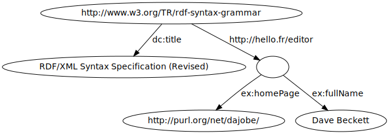

<page title="Using graphs"
navbar-doc="active"
with-contents="true"
>
<contents>
<prepare-toc>
<toc/>
<section id="creategraph" title="Creating a graph">
<p>
An RDF graph needs a base IRI, which can be used to name the graph.
Such a IRI is created using the <refdoc mod="Rdf_iri"/> module.
Then we use the <refdoc mod="Rdf_graph" id="VALopen_graph" name="Rdf_graph.open_graph"/>
function to create an empty graph:
</p>
<ocaml-eval>
<![CDATA[let base_iri = Rdf_iri.iri "http://foo.bar.net";;
let g = Rdf_graph.open_graph base_iri ;;]]>
</ocaml-eval>
<p>
If no option is provided, the graph is created in memory.
You can <elt href="doc-databases">create graphs stored in a MySQL or Postgresql
datatabase</elt>.
</p>
<p>
Once the graph is created, let's insert triples in the graph,
to associate the name "Alice" and the mailbox address IRI
"mailto:alice@mbox.net" to a new blank term:
</p>
<ocaml-eval toplevel="true">
let foaf_name = Rdf_iri.iri "http://xmlns.com/foaf/0.1/name";;
let foaf_mbox = Rdf_iri.iri "http://xmlns.com/foaf/0.1/mbox";;

let a = Rdf_term.Blank_ (g.Rdf_graph.new_blank_id());;
g.Rdf_graph.add_triple
   ~sub: a ~pred: foaf_name
   ~obj: (Rdf_term.term_of_literal_string "Alice");;

g.Rdf_graph.add_triple
   ~sub: a ~pred: foaf_mbox
   ~obj: (Rdf_term.Iri (Rdf_iri.iri "mailto:alice@mbox.net"));;

let b = Rdf_term.Blank_ (g.Rdf_graph.new_blank_id());;
g.Rdf_graph.add_triple
   ~sub: b ~pred: foaf_name
   ~obj: (Rdf_term.term_of_literal_string "Bob");;

g.Rdf_graph.add_triple
   ~sub: b ~pred: foaf_mbox
   ~obj: (Rdf_term.Iri (Rdf_iri.iri "mailto:bob@mbox.net"));;
</ocaml-eval>
<p>Here is the content of our graph, in Turtle format:</p>
<showttl graph="g"/>
</section>
<section id="querying" title="Querying the graph">
<p>
Let's use some of the <reftyp mod="Rdf_graph" name="graph"/> structure fields to
retrieve information from the graph.
</p>
<p>Here we look for the mailboxes of Alice, by querying the objects of
triples having a specified subject and object:
</p>
<ocaml-eval toplevel="true">
let alice_mbox = g.Rdf_graph.objects_of
  ~sub: a ~pred: foaf_mbox;;
List.iter (fun n -> print_endline (Rdf_term.string_of_term n)) alice_mbox;;
</ocaml-eval>
<p>
Let's now query all triples having the predicate <code>foaf_name</code>,
and use the <refval mod="Rdf_ttl" name="string_of_triple"/> function
to display the result:
</p>
<ocaml-eval toplevel="true">
let triples = g.Rdf_graph.find ~pred: foaf_name ();;
List.iter
   (fun (sub,pred,obj) ->
     print_endline (Rdf_ttl.string_of_triple ~sub ~pred ~obj))
   triples;;
</ocaml-eval>
<p>These are simple ways to query the graph.
<page href="doc-sparql">Sparql queries can be used</page> to execute
more powerful and more complex queries.
</p>
</section>

<section id="import" title="Importing and exporting">
<p>
The <ext-a href="http://www.w3.org/TR/rdf-syntax-grammar">RDF/XML</ext-a> and
<ext-a href="http://www.w3.org/TeamSubmission/turtle/">Turtle</ext-a> formats
are supported to import and export triples.
The corresponding functions are provided in modules
<refmod mod="Rdf_xml"/> and <refmod mod="Rdf_ttl"/>.
</p>
<p>Here is an example of code creating a graph, importing from a
RDF/XML file <code>example.rdf</code> and exporting to a Turtle file
<code>example.ttl</code>:
</p>
<ocaml-eval toplevel="true">
let base = Rdf_iri.iri "http://hello.fr" ;;
let g = Rdf_graph.open_graph base ;;
Rdf_xml.from_file g "example.rdf";;
Rdf_ttl.to_file g "example.ttl";;
</ocaml-eval>
</section>

<section id="transactions" title="Transactions">
<p>
Transactions can be used if the backend support them.
The storage in memory supports nested transactions, and database
backends support one level of transaction.
</p>
<p>Transactions are handled with the
<code>transaction_start</code>, <code>transaction_commit</code>
and <code>transaction_rollback</code> of the the
<reftyp mod="Rdf_graph" name="graph"/> structure.
</p>
<p>As an example, let's load data from a file:</p>
<ocaml-eval>
let base = Rdf_iri.iri "http://hello.fr" ;;
let g = Rdf_graph.open_graph base ;;
Rdf_ttl.from_file g "example.ttl";;
</ocaml-eval>
<p>This is our loaded data:</p>
<showttl graph="g"/>
<p>Now let's start a transaction, and modify the graph:</p>
<ocaml-eval>
g.Rdf_graph.transaction_start();;
let pred = Rdf_iri.iri "http://example.org/stuff/1.0/fullName" ;;
match g.Rdf_graph.find ~pred () with
| (sub,_,obj) :: _ ->
  (* remove a triple *)
  g.Rdf_graph.rem_triple ~sub ~pred ~obj;
  (* add a new triple, with a different name *)
  g.Rdf_graph.add_triple ~sub ~pred
    ~obj: (Rdf_term.term_of_literal_string "Jean Dupont")
| _ -> assert false;;
</ocaml-eval>
<p>Now the graph looks like:</p>
<showttl graph="g"/>
<p>If we rollback, we get the previous graph:</p>
<ocaml-eval>g.Rdf_graph.transaction_rollback();;</ocaml-eval>
<showttl graph="g"/>
</section>

<section id="dot" title="Dot output">
<p>
RDF graphs can be dumped in Graphviz (dot) format, with the
<refmod mod="Rdf_dot"/> module. The following code
generates the dot code, then creates a .svg file by running
a dot command. The result is inserted below.
</p>
<ocaml-eval><![CDATA[
let dot_file = "example.dot";;
let svg_file = (Filename.chop_extension dot_file)^".svg";;
let dot_code = Rdf_dot.dot_of_graph g;;
let () =
  let oc = open_out dot_file in
  output_string oc dot_code;
  close_out oc;;
let com = Printf.sprintf "dot -Grankdir=TB -Tsvg -o %s %s"
  (Filename.quote svg_file) (Filename.quote dot_file);;
if Sys.command com <> 0 then failwith "Exec error";;
]]></ocaml-eval>

</section>

<section id="namespaces" title="Namespaces">
<p>
Each graph has associated namespaces, i.e. pairs or (prefix, IRI), used
to shorten the (XML, Turtle, ...) outputs.
</p>
<p>
When loading a graph from a file, the namespaces used in the file
are automatically added to the graph, so that outputting the graph
will make use of the same namespaces.
</p>
<p>
Namespaces of a graph can also be set programmatically, using the
functions provided in each graph:
</p>
<ocaml-eval toplevel="true">
List.map
  (fun (iri, name) -> (Rdf_iri.string iri, name))
  (g.Rdf_graph.namespaces());;
</ocaml-eval>
<p>See <reftyp mod="Rdf_graph" name="graph"/> for other functions.</p>
</section>
</prepare-toc>
</contents>
</page>
